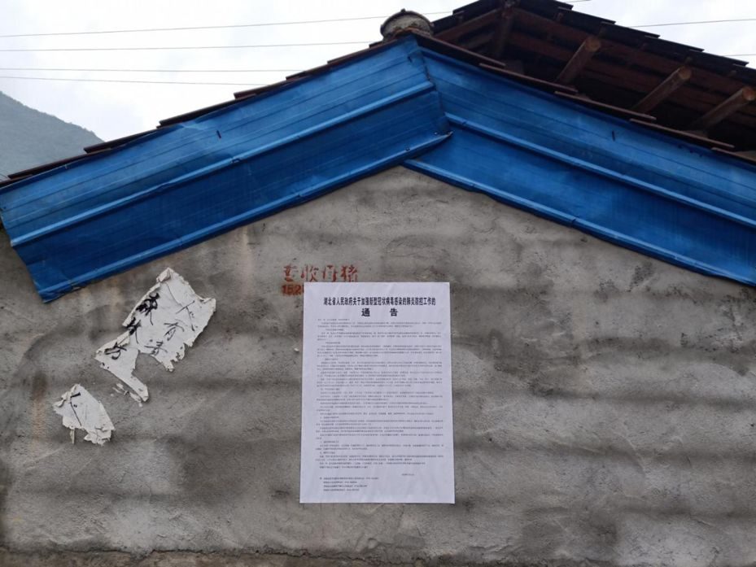

在人间 | 一个湖北母亲的三天三夜
原文链接 备份链接 离开湖北境内的时候，我百感交集。我的父母和亲友还在那里，他们将会面临什么，谁也不知道。 作为一个去过疫区、带着孩子又成功离开的湖北人，我有责任把这几天的历程客观记录下来，希望能够给诸多还在恐慌中的人多少一些参考意义。 …

鄂西乡间，村里开始贴上有关疫情的通告。向思琦摄
全文共*3498*字，阅读大约需要*7*分钟。
在武汉之外的湖北农村，1月23日，才是众多村民意识到疫情严重的“关键日”。在那天，武汉开始“封城”。
与突如其来的巨大防疫压力不相称的是，全村只有一名医生，村医无法每天找到这44个人，为他们检测体温。
当天晚上，有人在村微信群里询问村干部，“我们村有登记武汉来的人员吗？”
有人质疑为什么老人可以拿到口罩。医生解释：“年纪大了，容易得这个病（肺炎）。”
本文首发于南方周末 未经授权 不得转载
文 | 南方周末记者 汤禹成
南方周末特约撰稿 向思琦
责任编辑 | 吴筱羽
一场导致湖北多地“封城”的肺炎疫情，没有影响四百公里外鄂西乡间的人们如常过年。
2020年农历除夕，襄阳村落，人们忙碌地换着新对联、贴年画、挂灯笼，团年饭前，鞭炮声照例此起彼落。
没人戴口罩。“村里、镇上一般也不卖口罩。当然，现在想买也没有了。”说这话时，村里唯一的村医冯江脸上挂着苦笑。
村子离武汉市约六小时车程。冯江很小就跟着老中医父亲学医，近三十年来一直在这儿当村医，几年前，同事退休了，他成了唯一的村医。
村卫生室门上贴着他的手机号码。往年，农历大年三十他还可以回家团年，村民有事，打电话找他就行。今年，他的年三十被来自武汉的疫情打破，骑摩托车回家吃个午饭，又匆忙回岗。前一天，过来找他开药的人就有二十多个。
从乡镇到村落，再至各村民小组，农村疫情的防控迫在眉睫。在官方通报中，截至1月24日24:00，襄阳全市累计确诊病例1例，疑似病例76例，据南方周末记者了解，其中包括多个农村疑似病例。
1月26日清晨，人民日报公众号再度发出紧急呼吁：“防控疫情，别把农村漏了！”
1
在南方周末记者此前的电话采访中，多位武汉市民曾表示，病例通报激增的1月20日，成为武汉市民对疫情态度转向的关键一日。而在武汉之外的湖北农村，1月23日，才是众多村民意识到疫情严重的“关键日”。这天，武汉开始“封城”。
也是在这天，《人民日报》刊发评论称：“我国农村人口众多，卫生医疗条件相对较差，农民防范意识比较薄弱，外出务工经商的流动性很强，管理难度大。正值春节假期，大量外出务工人员从城市返回农村。春节期间，多数农村都有走亲访友、文艺演出等活动，人员聚集程度高，防范新型肺炎形势更加严峻。”
疫情防控的指令，从城市至乡镇，再至村落，往往需要一定时间。据南方周末记者了解，湖北各乡镇的疫情防控工作，真正展开大约就在1月23日。
冯江的村子所属镇的镇医院公共卫生科主任介绍，1月22日上午，全镇召开卫生系统的会议，对各行政村的村医进行培训，镇医院全体工作人员被召回工作。当日下午，镇政府又召开全镇村干部会议再次强调疫情防控工作。1月23日，镇医院院长又去到县里，参与全县各乡镇医院的紧急培训。
冯江也参加了镇上的会，晚上回到村里，便马上开始统计全村武汉返乡人员。统计内容包括姓名、性别、年龄、住址、联系电话、往返武汉的交通工具、往返时间等，十分详尽。
彼时春节临近，大部分人已借着春运大潮返乡。从武汉回来的人，成为重点关注的对象。
村里开始统计武汉返乡人士的1月22日，武汉大学生陈忱已经回到孝感大悟县彭店乡10天。
像陈忱这样的大学生，占据武汉返乡群体中的一定比例。武汉是中国大学生数量最多的城市，2018年末的数据显示，武汉有普通高校84所，全年在校研究生13.8万人，本专科在校生96.9万人。加之地域优势，百万大学生中，湖北籍学生人数犹多。而他们返乡时间普遍较早，早在武汉“关键日”1月20日之前已普遍离开。
彭店村村支书在1月23日晚上造访陈忱家，他没戴口罩，拿着本子记录，询问陈忱返乡时间、身体状况，陈忱说没什么不适，村支书就走了。没量体温，更多的是基于村人的信任。
陈忱在电话对南方周末记者说，村里从武汉返回的人不少，“鄂A牌照的车子比孝感还多。”他的哥哥在封城前一天赶回了家，而姐姐更是在封城前几小时才回来。
这些武汉返乡人，都成了村医们这个春节的“工作对象”。
2
村医冯江的“工作对象”是44名武汉返乡人员。
这是全镇武汉返乡人员最多的行政村之一，冯江有些紧张，“一旦出事，我们这责任就大了。”与突如其来的巨大防疫压力不相称的是，全村只有他一名医生，他无法每天找到这44个人，为他们检测体温。
“只能告诉村里各组组长，盯紧每个人的动态，挨个交代待在家不要乱跑。”冯江说。
在湖北乡镇的疫情防控中，村民小组组长往往是最前线的排查人员。鄂州某镇一名镇干部解释，组长们知道各家各户的情况，便于摸排。
疫情防控，在不同的村落参差不齐。另一个武汉返乡人员不到十人的村庄，村干部的通知却更为严厉。“明早六七点钟，我们村干部就在路上巡逻！如果发现有人不听劝阻，我行我素，串门拜年的，别怪我们不客气！”
除了不断在村民微信群里叮嘱“近期若有发热，全身乏力，呼吸道干咳或呼吸困难等症状请随时并就诊”，并附上自己的手机号码,冯江还不断向村民重复预防肺炎的八句口诀：“勤洗手，戴口罩，少聚会，多通风，忌野味，吃熟食，遵医嘱，莫恐慌。”
“我觉得这个八句口诀最好，说多了村民们也看不懂、记不住。”冯江说。
在农村地区，宣传需要通过更接地气的方式抵达。一些村落，工作人员举着喇叭，在村道上敲锣打鼓，用方言广而告之，内容往往为“禁止一切团拜活动”“不走亲访友”“不相互拜年”“建议短信拜年”“出门必须戴口罩”。
一段在网络上流传的农村防疫视频显示，雾气缭绕的村庄里，各家各户大门紧闭，只留下一位村医喷洒消毒水的身影。
冯江不必一个人喷消毒水，他要在每天中午12点前向镇医院公卫科上报统计信息。1月23日这天，他手写了登记表，却被告知不合要求，必须建立电子档案统一管理。冯江不怎么熟悉用电脑，只好又请来村里的年轻人，帮他把统计表登记到电脑上，这才勉强完成上报。
村干部也没休息，在村干部一次又一次在村民微信群里“不合时宜”的提醒中，终于，有人在群里询问村干部，“我们村有登记武汉来的人员吗？”有村民甚至要求公布这份名单。
一位老太太还在群里表达了自己的顾虑：有两个从武汉回来的侄孙要来探望，一年见一次，实在不想也不好意思拒绝，但又害怕。在众人七嘴八舌的劝说下，老太太最终拒绝了。

鄂西乡间如往年春节一样平静，城里“封城”消息不断传来，人们才开始紧张起来。向思琦摄
3
和村里的热闹相比，15分钟车程外的镇上有些冷清。来看病的人不多，医务人员频繁进出，大部分戴一次性医用口罩。
村卫生所只能开药和看最简单的疾病，乡镇一级的医院，事实上成为乡镇应对发烧病人的第一个关卡。
预诊分诊处也是从1月23日开始设置的：体温正常的看常规门诊；体温偏高的则去看专为这次肺炎疫情开设的发热门诊。三层楼住院部也开辟了三楼作为隔离观察病房。不过，隔离病房如今还没派上用场。
1月24日下午3时，一位老人在预诊分诊处量了体温，温度计显示37.1℃，值班医生记录下相关信息，随后给她发了一只一次性医用外科口罩，称“体温正常，去隔壁房间看病”。老人佝偻着背离开。
旁边一个刚量过体温的年轻人见状，也上前索要口罩，医生摇头说：“没货！”有人质疑为什么老人可以拿到口罩。医生解释：“年纪大了，容易得这个病（肺炎）。”
这是乡镇防疫医疗资源短缺的一个截面。
镇医院公共卫生科主任介绍，1月23日统计，从1月1日起，全镇从武汉返乡的人员有370余人，24日还有所增加，“估计三四百人”。每天下午4点前，她都需要把全镇名单再上报至县里。
这位主任说，目前镇医院口罩等医疗物资紧缺，“医生护士都不够发”，虽已报告给县疾控中心，但还没有物资下来。1月24日下午三点多，镇医院院长从县里采购完物资回来，但没能采集到足量口罩，只在县城一个药房买到了一部分“五颜六色”的非医用口罩。
一个令人担忧的细节是，截至1月24日晚，该镇下属17个行政村中，所有直接与武汉返乡人员接触的村医均无口罩。冯江说，在村医与镇医院联系的微信群中，有几个村医向院长索要口罩：“怎么说也得给我们村医一人一个吧？”院长没有回复。
冯江告诉南方周末记者，镇医院的培训用课件讲了疑似症状、防控措施，但未下发任何物资。他没有消毒液，没有口罩，也没有水银体温计，只有一个红外线测温仪，还是自己一年多前在电商平台购买的。“平时根本没有这些物资做储备，现在到非常时期，哪里来得及。”
农村防疫还有其他潜在风险。
黄冈是第二个封城的湖北城市，陈菲的老家在黄冈代管市麻城的一个村。1月24日，年三十的早晨，她从麻城市区上高速，准备回奶奶家拜年。她看到，出高速的地方，麻城红十字会的人身着白色防护服，在给每辆进麻城市区的车做检查，但出城进村的车子却无需经过任何检查。
随着冯江所在的村子宣传升级，城里的真假封路消息不断传来。
大年初一早上，前一夜鞭炮声还不断的村庄一片寂静。村民陆续接到拜年电话，并互相交流着肺炎疫情及其带来的交通影响：“高速路封了吗”“省道还能走吗”“班车还在跑吗”。
不多久，村干部家的车来了，在泥泞的土路上来回碾过车辙，后备箱音响循环播放：“今年春节不聚餐不拜年不走亲访友，大家各回各家，静待春暖花开。”
（应受访对象要求，冯江、陈忱为化名）
其他人都在看：


原文链接 备份链接 离开湖北境内的时候，我百感交集。我的父母和亲友还在那里，他们将会面临什么，谁也不知道。 作为一个去过疫区、带着孩子又成功离开的湖北人，我有责任把这几天的历程客观记录下来，希望能够给诸多还在恐慌中的人多少一些参考意义。 …
原文链接 备份链接 作者 | 王晓 出品 | 棱镜·腾讯小满工作室 欢迎下载腾讯新闻APP，阅读更多优质资讯 对于湖北人民来说，2020年的这个除夕夜太不平常了。 “药店大姐告诉我们，口罩绝不涨价，不发国难财，而且告知我们第二天早7点开 …
原文链接 备份链接 记者 | 刘畅 王梓辉 年轻人与老年人的两重世界 “我所在的镇距离武汉开车只要两个小时，武汉夜里凌晨两点多宣布封城，我们镇上有人夜里就开车回来了。”家住在武汉西边荆州监利县网市镇的蔡姗发现，在武汉肺炎疫情开始上涨的1 …
原文链接 备份链接 这注定是一个难捱的春节。 截至1月23日24时， 全国确诊新型肺炎病例830例， 死亡25例。 截至1月23日晚，中国新型肺炎疫情地图（来源：丁香医生） 同时，国际确诊案例也陆续出现。 截至1月23日，数据如下： 泰 …
原文链接 备份链接 离汉通道关闭的前一天|图片报道 2020-01-23 07:22 作者：王迎春 来源：中国经营网 本报记者王迎春 武汉报道 1月22日，武汉首次披露肺炎疫情后第23天，湖北省、武汉市两级政府自21日起集中发布关于疫情防 …